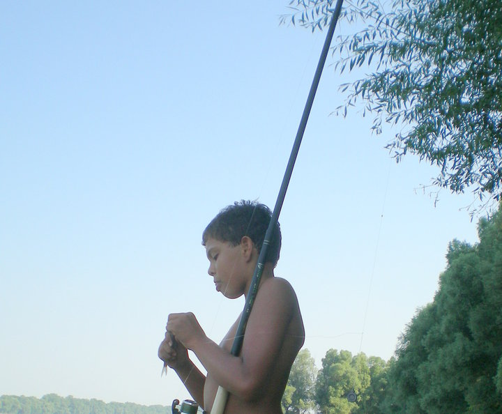
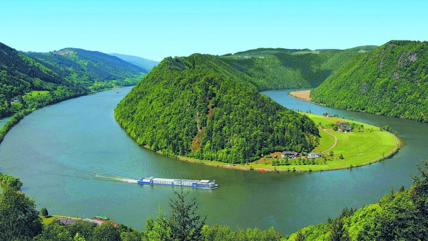

This dish is a traditional Hungarian soup. An important ingredient is the broth. It's ingredients are Fish (carp or mixed river fish), paprika, vegetables (red onions, green peppers, tomatoes), and if you're by the Danube(a river) noodles Depending on which river you're by the ingredients vary.
A fun memory I have of this dish is from when I was a child. My grandma's boyfriend had a cabin by the Danube river, in a fishing town called Baja. The main attraction/event was to take our wooden motorboat to this island where our neighbors would be waiting for us with their boats docked on the sandy river beach. On this island we'd bathe when it got hot but most importantly we would fish! Everyone from our street would cast their lines sit and just tell jokes, or stories of them growing up on the river. It was tradition, that when a Ponty(Carp) was caught it meant that we will be having Fisherman's Soup. So everyone on our street would pitch in with their catch the next day and we would start making the soup. It's cooked in a giant cauldron over a fire. It's a whole day process. Once it's finished we'd have a giant feast at our cabin overlooking the Danube.
